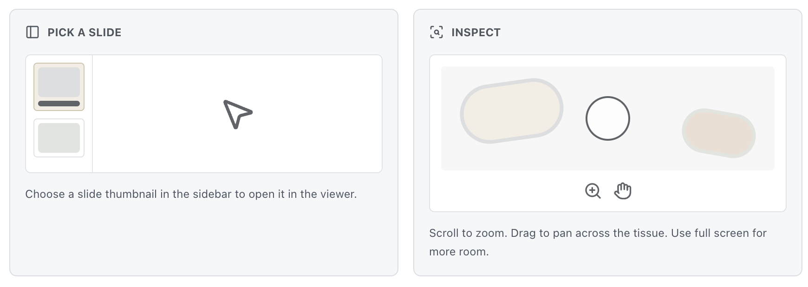

Before You Start
What is on the flash drive?
- WSI Hive for Windows.
- WSI Hive for Mac.
- A folder called
Slides, if slide files are included. - This guide.
Some folders may be hidden. That is normal. Please do not move, rename, or delete files.
Computer requirements
- Windows 10 or Windows 11.
- macOS 11 Big Sur or newer.
- Permission to open an app from a flash drive.
Older computers or older USB ports may run more slowly with large slide files.
How to Open WSI Hive
Windows steps
- Put the flash drive into your computer.
- Open File Explorer.
- Click the flash drive name.
- Open this guide, if it is not already open.
- Click Open WSI Hive for Windows.
- If that does not work, double-click WSI-Hive-Windows.bat or WSI-Hive-Windows.exe on the flash drive.
If Windows shows a security message
- Check that the flash drive came from UHN or another trusted source.
- If you see Windows protected your PC, click More info.
- Click Run anyway, if your computer allows it.
- If your workplace or antivirus software blocks the app, ask your IT team or contact UHN.
Mac steps
- Put the flash drive into your Mac.
- Open Finder.
- Click the flash drive name.
- Open this guide, if it is not already open.
- Click Open WSI Hive for Mac.
- If that does not work, double-click WSI-Hive-macOS.command or WSI Hive.app on the flash drive.
If your Mac says the app cannot be opened
- Check that the flash drive came from UHN or another trusted source.
- In Finder, hold the Control key and click the app or command file.
- Click Open.
- If asked again, click Open.
- If your Mac is managed by an organization, you may need help from your IT team.
How to Use WSI Hive
- When WSI Hive opens, read the notice on the screen.
- If you understand the notice, check the box and click Confirm and Continue to Viewer.
- The app will look for slides in the
Slidesfolder on this flash drive. - Click a slide in the list on the left side.
- Use your mouse wheel or trackpad to zoom in and out.
- Click and drag the slide image to move around.

If you do not see any slides
Click Rescan in the app. If slides still do not appear, do not move files or create new folders. Contact UHN for help.
If you need to find the slide folder
The slide folder is usually called Slides and is on the flash drive. Some versions of the drive may hide this folder. That is okay. Please do not rename it or move it.
Important Medical and Privacy Notice
Personal Records Only
These digital images are provided to you as a courtesy for your personal records under the Personal Health Information Protection Act (PHIPA). They are not intended for independent diagnostic use.
Professional Interpretation Required
Pathology images are highly complex. A definitive diagnosis requires a qualified Pathologist to review the slides in the context of your full clinical history, using medically validated workstations. We strongly advise against attempting to self-diagnose.
Research Use Software
The OpenSlide™ and OpenSeadragon™ software provided on this drive are open-source tools intended for research and educational viewing. It is not a Health Canada-approved medical device for primary diagnosis.
Privacy Warning
This thumb drive contains sensitive Personal Health Information (PHI). Please store it in a secure location. If lost or stolen, UHN is not responsible for unauthorized access to the data on this physical media.
How to Care for the Flash Drive
- Do not delete, rename, or move files unless UHN tells you to.
- Do not format the flash drive.
- Do not remove the flash drive while WSI Hive is open.
- Close WSI Hive before removing the flash drive.
- Safely eject the flash drive before taking it out. On Windows, right-click the drive and choose Eject. On a Mac, click the eject button beside the drive name in Finder.
- Keep the flash drive in a secure place.
If You Need Help
The app does not open
- Make sure you clicked the button for your computer, Windows or Mac.
- Try double-clicking the app file directly on the flash drive.
- Restart the computer and try again.
- If it still does not open, contact UHN.
A security warning appears
This can happen with apps on flash drives. Only continue if the drive came from UHN or another trusted source. If the computer belongs to your workplace, your IT team may need to help.
I cannot find the Slides folder
The folder may be hidden. Do not create a new folder or move files. Contact UHN if the app cannot find your slides.
The app is slow
- Large slide files can take time to load.
- Use a USB 3.0 or USB-C port if you have one.
- Close other programs you are not using.
- Wait a few moments before zooming again.
The flash drive is not detected
- Try another USB port.
- Try another trusted computer, if one is available.
- Do not format the drive.
- Contact UHN.
Common questions
Can I copy the app to my computer?
Please use the app from the flash drive unless UHN tells you otherwise. Copying files may create privacy or version problems.
Can I delete the Slides folder?
No. The app needs the slide files in that folder.
Can I use this on both Windows and Mac?
Yes, if both app versions are included on the flash drive. Use the Windows file on a Windows computer and the Mac file on a Mac.
Contact UHN
If you need help, contact the UHN Laboratory Medicine Program.
Phone
416-340-4800 ext. LABS (5227)
Toll-free: 1-866-865-LABS (5227)
When you ask for help, please include:
- Whether you are using Windows or Mac.
- The message you see on the screen, if there is one.
- The flash drive label or version, if you can find it.
- Whether the
Slidesfolder is visible.